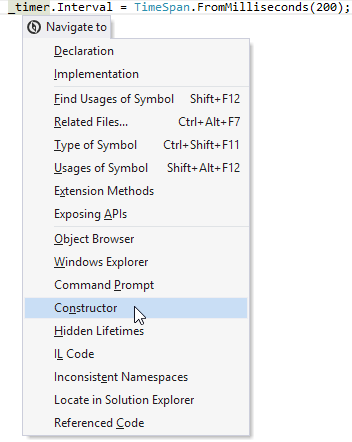

将导航操作添加到“导航至”菜单
您应该事先知道：
范例（ ？ ）：
如果您希望导航显示在ReSharper的“ 导航至”菜单（ 上下文导航 ）中，则应创建一个操作来实现INavigateFromeHereProvider接口。

例如，让我们创建一个上下文相关的导航，该导航到一个类构造函数。初始插入符号位置可以在该类内的任何位置。
[ContextNavigationProvider] public class NavigateToCtorProvider : INavigateFromHereProvider { public IEnumerable<ContextNavigation> CreateWorkflow(IDataContext dataContext) { var node = dataContext.GetSelectedTreeNode<ITreeNode>(); var typeDeclaration = node?.GetParentOfType<IClassDeclaration>(); var constructor = typeDeclaration?.ConstructorDeclarations.FirstNotNull(); if (constructor != null) { yield return new ContextNavigation("Constructor", null, NavigationActionGroup.Other, () => { constructor.NavigateToTreeNode(true); }); } } }笔记
- 该类必须实现
INavigateFromHereProvider界面并标有ContextNavigationProvider属性。 GetSelectedTreeNode的方法() IDataContext返回当前插入符号位置下的树节点。- 我们使用
GetParentOfType使用手动导航获取方法IClassDeclaration节点。 - 的
IClassDeclaration类提供了ConstructorDeclarations该属性返回类构造函数的可枚举。 - 已创建的实例
ContextNavigation该类描述了导航功能："Constructor"：出现在导航到上下文菜单中的项目的名称。null：动作ID。NavigationGroup.Other：定义“ 导航到”菜单中应放置动作的位置。- 最后一个参数是在“ 导航到”菜单中选择“ 构造函数”项目后运行的操作。
- 请注意，ReSharper会自动决定是否在菜单中显示该项目。
上次修改时间：2017年7月12日